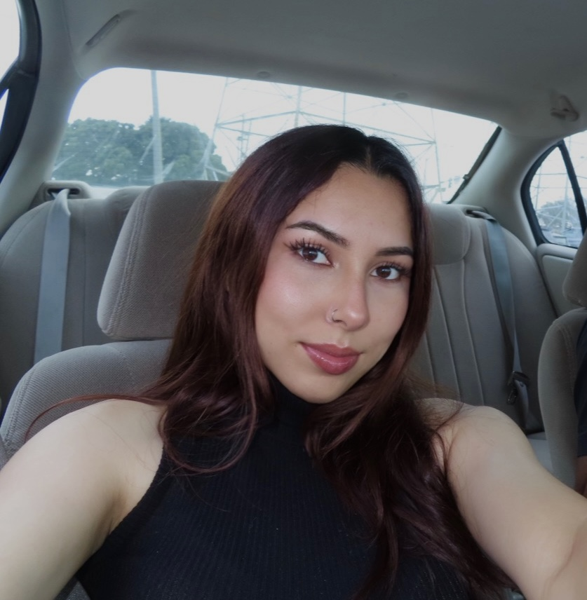

Leonor Sanchez is a transfer student from Santa Rosa Junior College, currently attending her second semester at San Francisco State University. After a long journey of trying to discover her passion, she finalized her decision and chose to major in Visual Communication Design in hopes of pursuing a freelance graphic design and entrepreneurship role in the near future. She sees herself designing her own small business in the future and working for businesses that she loves and supports. She was always drawn to art and design as a child because of how uniquely striking it is to the eye. Seeing the unique art people create is truly inspiring and motivational to her. She has always been the person to admire the little details that go unacknowledged. Aside from design, there are other things she enjoys, such as fitness, photography, cooking, reading, fashion, and music. She likes to read educational books involving subjects she wants to learn about, and she enjoys cooking her favorite Caribbean dishes when she gets the chance. She never expected to pursue a career in this field after several trials and errors, but here she is, eager to learn and thrilled to begin her new educational journey. Her message to others is to follow what their heart wants, rather than what their mind thinks it wants.
WELCOME TO MY SITE!